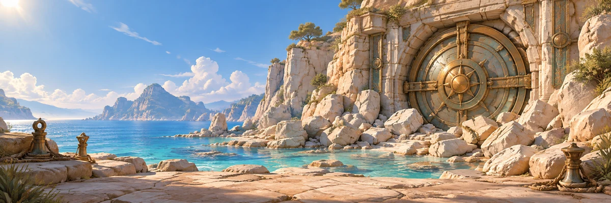

Fieldworks · stronger silhouettes
Phase 1 refinement for approval. Four objects only. Board, scene and gameplay are unchanged.
Original SVG · 48px
Previous prototype · 48px
Refined prototype · 48px
Every object uses the same 48 CSS-pixel box. Broader proportions are in the artwork, not enlarged touch targets. Copper offcut → Grip tool → Split spanner → Pocket winch.
Landing · unchanged scene

Material close-ups